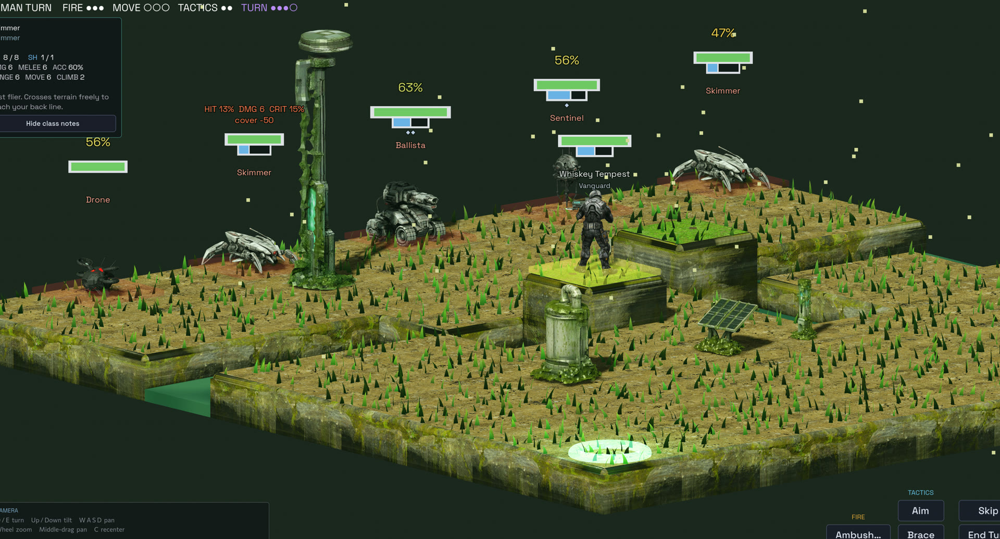
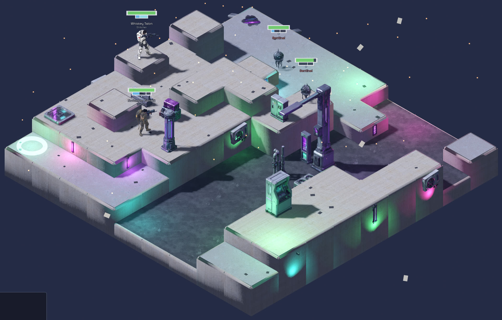

Chrome Elegy
A turn-based tactics roguelite. Isometric grid combat on procedurally generated maps across four biomes, where cover, elevation and initiative decide fights before the dice do. Runs feed the next one: salvage unlocks classes and abilities that carry forward, so each attempt starts from a stronger position than the last.
Two sides alternate turns on a grid built in three dimensions. Units spend a turn moving and acting, and almost every decision is a trade: take the high ground and lose the shot this turn, or fire now from poor cover and accept the odds on the panel.
Shots resolve on a stated hit chance rather than a hidden one. The interface shows the number before you commit, along with what is modifying it, so a loss reads as a decision that went badly rather than as the game cheating.
A run crosses four biomes, each with procedurally generated scenarios, so the maps are never learned by heart. Salvage taken from downed machines unlocks classes and abilities that persist past the run that earned them. Losing is expected, and the next attempt begins with more of the toolkit available.
I designed the systems, modelled the assets and wrote the music. The code was written by an AI assistant working to my specification: I decided what the game should do, reviewed each iteration, and cut what did not work.
Design, 3D modelling and music by Pablo Ministral. Implementation written with an AI coding assistant.
- Cover and elevation are the same system. Height changes both what you can see and what can see you, so the map is the main tactical variable rather than a backdrop for it.
- The run is the unit of progress. Salvage buys permanent unlocks rather than in-run upgrades, so a failed run still moves the player forward and the difficulty curve is shaped by what they have earned, not by a slider.
- Four biomes, generated scenarios. Maps are procedurally built, so a run tests whether the player understands the systems rather than whether they have memorised the level.
- Distinct roles, not stat blocks. Each class solves a different problem, so a squad is a set of answers rather than a pile of numbers.
- Readable at a glance. Flat colour, strong silhouettes and floating damage numbers keep the board legible without a tutorial.


Status: playable prototype, currently in QA. The build is unsigned, so Windows will show a SmartScreen warning on first run. A download will be linked here once the first tagged build is out.